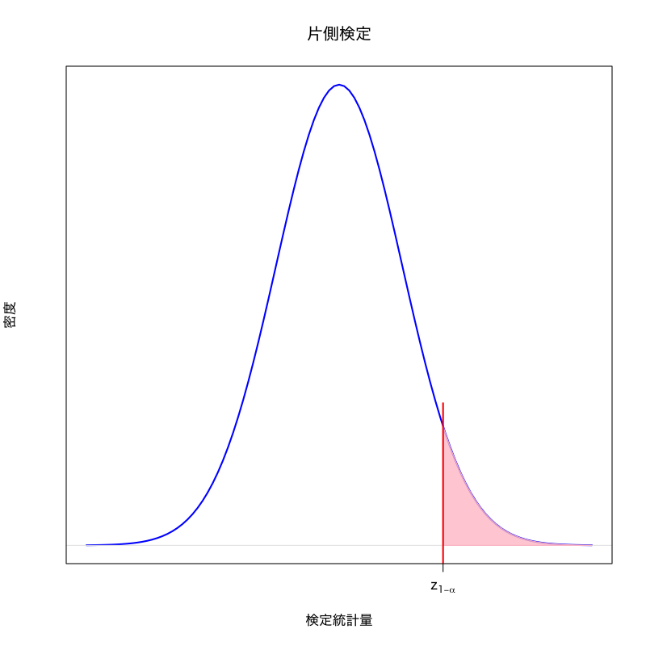
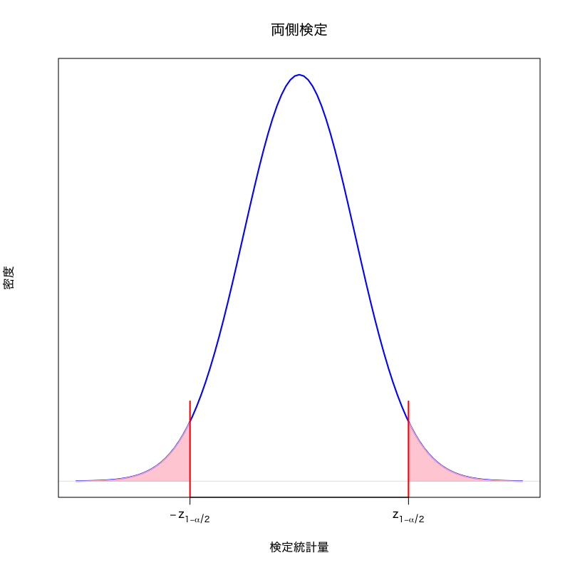

確率・統計 - 第12講
村田 昇
帰無仮説 \(H_0\)
検定統計量の分布を予想するために立てる仮説
対立仮説 \(H_{1}\)
“帰無仮説が誤っているときに起こりうるシナリオ”として想定する仮説
有意水準
第一種過誤が起きる確率(サイズ)として許容する上限
\(p\) 値 (有意確率)
\begin{equation} \text{(\(p\) 値)} =\min\{\alpha\in(0,1)|\text{\(T\) が\(R_{\alpha}\)に含まれる}\} \end{equation}
有意水準と \(p\) 値の関係
\(p\) 値が有意水準未満のときに帰無仮説を棄却する
問題
確率変数列の平均値が \(\mu\) と等しいか検定せよ．
\begin{equation} X_1,X_2,\dotsc,X_n \end{equation}
検定問題
\begin{equation} X_i=\theta+\varepsilon_{i}, \quad i=1,\dotsc,n \qquad \varepsilon_{i}\sim\mathcal{N}(0,\sigma^{2}) \end{equation}を観測値の確率モデル (\(\sigma^{2}\) は既知) とするとき
\begin{equation} H_{0}: \theta=\mu \quad\text{vs}\quad H_{1}: \theta\not=\mu \end{equation}
検定統計量
\begin{equation} T=\frac{\sqrt{n}(\bar{X}-\mu)}{\sigma} \end{equation}
棄却域 (両側検定の場合)
\begin{equation} R_{\alpha} = \left(-\infty,-z_{1{-}\alpha/2}\right) \cup \left(z_{1{-}\alpha/2},\infty\right) \end{equation}
問題
2つの確率変数列の平均値が等しいか検定せよ．
\begin{equation} X_1,X_2,\dotsc,X_n, \qquad Y_1,Y_2,\dotsc,Y_m \end{equation}
検定問題
\begin{align} X_i&=\theta_{1}+\varepsilon_{1i}, \quad i=1,\dotsc,n \qquad \varepsilon_{1i}\sim\mathcal{N}(0,\sigma^{2})\\ Y_j&=\theta_{2}+\varepsilon_{2j}, \quad j=1,\dotsc,m \qquad \varepsilon_{2j}\sim\mathcal{N}(0,\sigma^{2}) \end{align}を観測値の確率モデル (\(\sigma^{2}\) は既知) とするとき
\begin{equation} H_{0}: \theta_{1}=\theta_{2} \quad\text{vs}\quad H_{1}: \theta_{1}\not=\theta_{2} \end{equation}
検定統計量
\begin{equation} T=\sqrt{\frac{nm}{n+m}}\frac{\bar{X}-\bar{Y}}{\sigma} \end{equation}
棄却域 (両側検定の場合)
\begin{equation} R_{\alpha} = \left(-\infty,-z_{1{-}\alpha/2}\right) \cup \left(z_{1{-}\alpha/2},\infty\right) \end{equation}
両側検定:
棄却域がある定数 \(a < b\) によって
\begin{equation} (-\infty,a)\cup(b,\infty) \end{equation}
片側検定
棄却域がある定数 \(a\) によって
\begin{align} &(a,\infty)&&\text{(右片側検定)}\\ &(-\infty,a)&&\text{(左片側検定)} \end{align}

Figure 1: 右片側検定の棄却域

Figure 2: 両側検定の棄却域
問題
確率変数列の平均値が \(\mu_{0}\) と等しいか検定せよ．
\begin{equation} X_{1},X_{2},\dotsc,X_{n} \end{equation}
検定問題
\begin{equation} X_{i}=\mu+\varepsilon_{i}, \quad i=1,\dotsc,n \qquad \varepsilon_{i}\sim\mathcal{N}(0,\sigma^{2}) \end{equation}を観測値の確率モデル (\(\sigma^{2}\) は 未知) とするとき
\begin{equation} H_{0}: \mu=\mu_{0} \quad\text{vs}\quad H_{1}: \mu\neq\mu_{0} \end{equation}
標本平均
\begin{equation} \bar{X}=\frac{1}{n}\sum_{i=1}^nX_i \end{equation}
不偏分散
\begin{equation} s^{2}=\frac{1}{n{-}1}\sum_{i=1}^n(X_i-\bar{X})^{2} \end{equation}
標本平均 (標準正規分布)
\begin{equation} \frac{\bar{X}-\mu_{0}}{\sigma/\sqrt{n}} \sim \mathcal{N}(0,1) \end{equation}
不偏分散 (\(\chi^{2}\) 分布)
\begin{equation} \frac{(n{-}1)s^{2}}{\sigma^{2}} \sim \chi^{2}(n{-}1) \end{equation}
検定統計量
\begin{equation} T=\frac{\sqrt{n}(\bar{X}-\mu_0)}{s} \end{equation}
帰無分布は自由度 \(n{-}1\) の \(t\) 分布
\begin{equation} \text{(\(t\) 分布)} = \frac{\text{(標準正規分布)}} {\sqrt{(\chi^{2}\text{分布})/\text{(自由度)}}} \end{equation}
棄却域 (両側検定の場合)
\begin{equation} R_{\alpha}= \left(-\infty,-t_{1{-}\alpha/2}(n{-}1)\right) \cup\left(t_{1{-}\alpha/2}(n{-}1),\infty\right) \end{equation}
問題
2つの確率変数列の平均値が等しいか検定せよ．
\begin{equation} X_{1},X_{2},\dotsc,X_{m}, \qquad Y_{1},Y_{2},\dotsc,Y_{n} \end{equation}
検定問題
\begin{align} X_i&=\mu_{1}+\varepsilon_{1i}, \quad i=1,\dotsc,m && \varepsilon_{1i}\sim\mathcal{N}(0,\sigma_{1}^{2})\\ Y_j&=\mu_{2}+\varepsilon_{2j}, \quad j=1,\dotsc,n && \varepsilon_{2j}\sim\mathcal{N}(0,\sigma_{2}^{2}) \end{align}を観測値の確率モデル (\(\sigma_{i}^{2}\) は 未知) とするとき
\begin{equation} H_{0}: \mu_{1}=\mu_{2} \quad\text{vs}\quad H_{1}: \mu_{1}\neq\mu_{2} \end{equation}
検定統計量
\begin{equation} T=\frac{\bar{X}-\bar{Y}}{\sqrt{s_{1}^{2}/m+s_{2}^{2}/n}} \quad \text{(\(s_{1}^{2},s_{2}^{2}\)は\(X,Y\)の不偏分散)} \end{equation}
帰無分布は近似的に自由度 \(\hat{\nu}\) の \(t\) 分布 (Welchの近似)
\begin{equation} \hat{\nu} =\frac{(s_{1}^{2}/m+s_{2}^{2}/n)^{2}} {(s_{1}^{2}/m)^{2}/(m{-}1)+(s_{2}^{2}/n)^{2}/(n{-}1)} \end{equation}
棄却域 (両側検定の場合)
\begin{equation} R_{\alpha}= \left(-\infty,-t_{1{-}\alpha/2}(\hat{\nu})\right) \cup\left(t_{1{-}\alpha/2}(\hat{\nu}),\infty\right) \end{equation}
問題
確率変数列の分散が \(\sigma_0^{2}\) と等しいか検定せよ．
\begin{equation} X_{1},X_{2},\dotsc,X_{n} \end{equation}
検定問題
\begin{equation} X_{i}=\mu+\varepsilon_{i}, \quad i=1,\dotsc,n \qquad \varepsilon_{i}\sim\mathcal{N}(0,\sigma^{2}) \end{equation}を観測値の確率モデルとするとき
\begin{equation} H_0:\sigma^{2}=\sigma_0^{2} \quad\text{vs}\quad H_{1}:\sigma^{2}\neq\sigma_0^{2} \end{equation}
検定統計量
\begin{equation} \chi^{2}=\frac{(n{-}1)s^{2}}{\sigma_0^{2}} \quad \text{(\(s^{2}\)は\(X\)の不偏分散)} \end{equation}
棄却域 (両側検定の場合)
\begin{equation} R_{\alpha}= \left(0,\chi^{2}_{\alpha/2}(n{-}1)\right) \cup\left(\chi^{2}_{1{-}\alpha/2}(n{-}1),\infty\right) \end{equation}
問題
2つの確率変数列の分散が等しいか検定せよ．
\begin{equation} X_{1},X_{2},\dotsc,X_{m}, \qquad Y_{1},Y_{2},\dotsc,Y_{n} \end{equation}
検定問題
\begin{align} X_i&=\mu_{1}+\varepsilon_{1i}, \quad i=1,\dotsc,m && \varepsilon_{1i}\sim\mathcal{N}(0,\sigma_{1}^{2})\\ Y_j&=\mu_{2}+\varepsilon_{2j}, \quad j=1,\dotsc,n && \varepsilon_{2j}\sim\mathcal{N}(0,\sigma_{2}^{2}) \end{align}を観測値の確率モデルとするとき
\begin{equation} H_0:\sigma_{1}^{2}=\sigma_{2}^{2} \quad\text{vs}\quad H_{1}:\sigma_{1}^{2}\neq\sigma_{2}^{2} \end{equation}
検定統計量
\begin{equation} F=\frac{s_{1}^{2}}{s_{2}^{2}} \quad \text{(\(s_{1}^{2},s_{2}^{2}\)は\(X,Y\)の不偏分散)} \end{equation}
棄却域 (両側検定の場合)
\begin{equation} R_{\alpha}= \left(0,F_{\alpha/2}(m{-}1,n{-}1)\right) \cup\left(F_{1{-}\alpha/2}(m{-}1,n{-}1),\infty\right) \end{equation}
以下の問に答えよ．
携帯電話の利用料(月額)を調べた． 18〜25歳の 80 人では平均 7400 円(標準偏差 2500 円)， 30〜40歳の 100 人では平均 8200 円(標準偏差 2800 円)であった． それぞれの年齢層の利用料は正規分布に従い， 上記の標準偏差は正確に求められているとする．
このとき， 利用料の平均に違いがあると言えるかを 有意水準 0.05 で考えなさい．
漸近正規性 (データ数が多いときの性質)
多くの推定量 \(\hat{\theta}\) の分布は正規分布で近似できる
定理
\(f(x)>0\) が連続で2階微分可能ならば \(\sqrt{n}(\hat\theta^*-\theta_0)\) は \(n\to\infty\) で正規分布 \(\mathcal{N}(0,I(\theta_0)^{-1})\) に近づく．
Fisher 情報量 (\(f\) : 確率質量関数または確率密度関数)
\begin{align} I(\theta_0) &=\mathbb{E}_{\theta_0} \left[ -\frac{\partial^{2}}{\partial\theta^{2}}\log f(X;\theta_0) \right] \\ &=\mathbb{E}_{\theta_0}\left[\left( \frac{\partial}{\partial\theta}\log f(X;\theta_0)\right)^{2}\right] \end{align}
問題
\(\theta_0\) を既知の定数として， 母数 \(\theta\) が真の値 \(\theta_0\) であるか否かを検定する
\begin{equation} H_0:\theta=\theta_0\quad\text{vs}\quad H_{1}:\theta\neq\theta_0 \end{equation}
最尤推定量の性質
観測データ数 \(n\) が十分大きいとき， 1次元母数 \(\theta\) を含む連続分布の最尤推定量 \(\hat\theta\) は
\begin{equation} \mathbb{E}[\hat\theta]=\theta_{0},\quad \mathrm{Var}(\hat\theta)=\frac{1}{nI(\theta_{0})} \end{equation}の正規分布で近似できる．
検定統計量
\begin{equation} Z = \sqrt{nI(\theta_{0})}(\hat{\theta}-\theta_{0}) \end{equation}
有意水準 \(\alpha\) の両側検定
\(z_{1{-}\alpha/2}\) : 標準正規分布の \(1{-}\alpha/2\) 分位点
棄却域
\begin{equation} R_{\alpha}= \left(-\infty,-z_{1{-}\alpha/2}\right) \cup\left(z_{1{-}\alpha/2},\infty\right) \end{equation}
問題
A社とB社の開発した2つの文字認識機械がある． \(n\) 個の文字に対してその性能を調べたところ
1 2 3 … n A社 ○ ○ × … ○ 98.1% B社 × ○ ○ … ○ 98.0% のような正答率を示した． このときA社の機械はB社より優れていると言えるだろうか？
| Aが正解 | Aが誤り | |
|---|---|---|
| Bが正解 | 9800 | 0 |
| Bが誤り | 10 | 190 |
| Aが正解 | Aが誤り | |
|---|---|---|
| Bが正解 | 9610 | 190 |
| Bが誤り | 200 | 0 |
以下の問に答えよ
A社とB社の開発した2つの文字認識機械がある． 10,000文字に対してその性能を調べたところ
Aが正解 Aが誤り Bが正解 9500 180 Bが誤り 220 100 のような正答率を示した． このときA社の機械はB社より優れていると言えるだろうか？
Created by Noboru Murata | Licensed under CC BY-NC 4.0